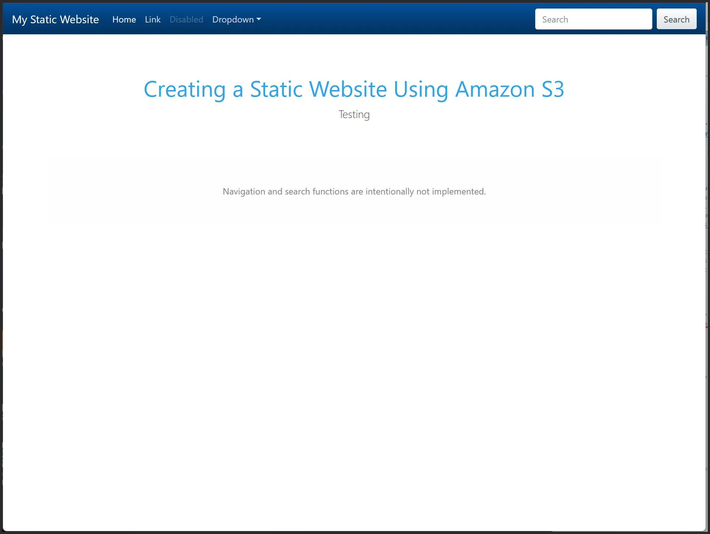
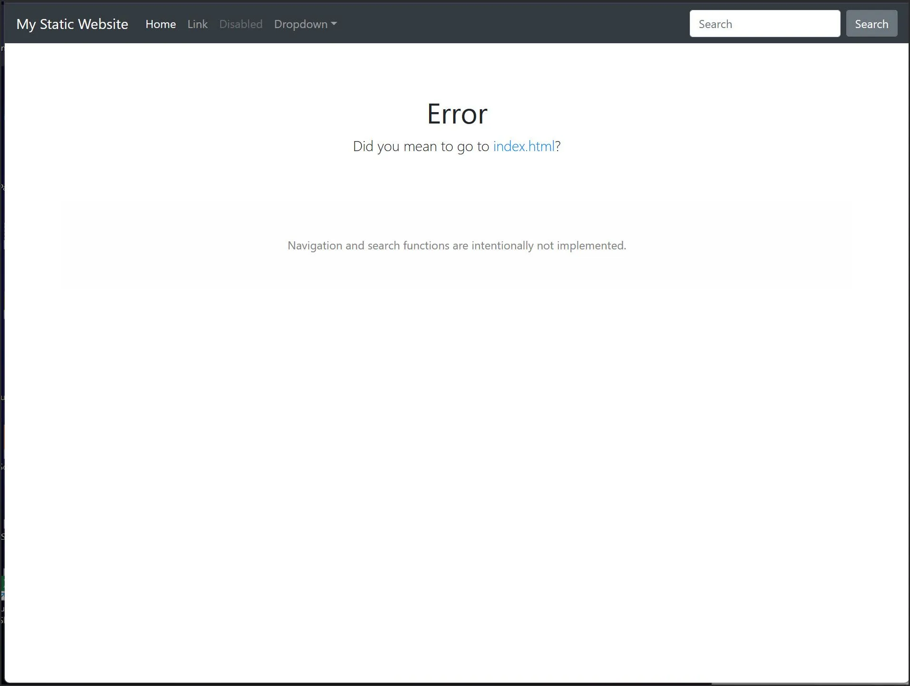

🌐 Hosting a Static Website on AWS S3
Hosting a static website on AWS S3 is a cost-effective and scalable solution. This guide walks you through setting up your own static site with just a few steps.
Step 1: Clone My Git Repo
Grab the sample files from my GitHub:
git clone https://github.com/malcolmso/aws
Step 2: Create an S3 Bucket
- Log in to your AWS Console.
- Navigate to S3 and click “Create Bucket.”
- Provide a unique bucket name.
- Select a region and adjust settings as needed.
- Click “Create Bucket.”
Step 3: Upload Your HTML Files
- Open the bucket.
- Click “Upload” and add
index.htmlanderror.html. - Click “Upload” to confirm.
Step 4: Enable Static Website Hosting
- Go to the Properties tab of your bucket.
- Scroll to Static Website Hosting → Edit.
- Enable hosting and set:
Index Document:index.html
Error Document:error.html - Click “Save.”
- Note the Bucket Website Endpoint:
http://your-bucket-name.s3-website-us-east-1.amazonaws.com/
Step 5: Update Bucket Permissions
- Go to the Permissions tab → Bucket Policy → Edit.
- Copy your Bucket ARN:
arn:aws:s3:::your-bucket-name - Use the AWS Policy Generator:
- Policy Type: S3 Bucket Policy
- Effect: Allow
- Principal:
* - Action:
s3:GetObject - ARN:
arn:aws:s3:::your-bucket-name/*
- Click Add Statement → Generate Policy.
- Paste it into the Bucket Policy editor → Save.
Step 6: Test the Website
Open the URL in your browser and confirm the site loads correctly 🎉
 